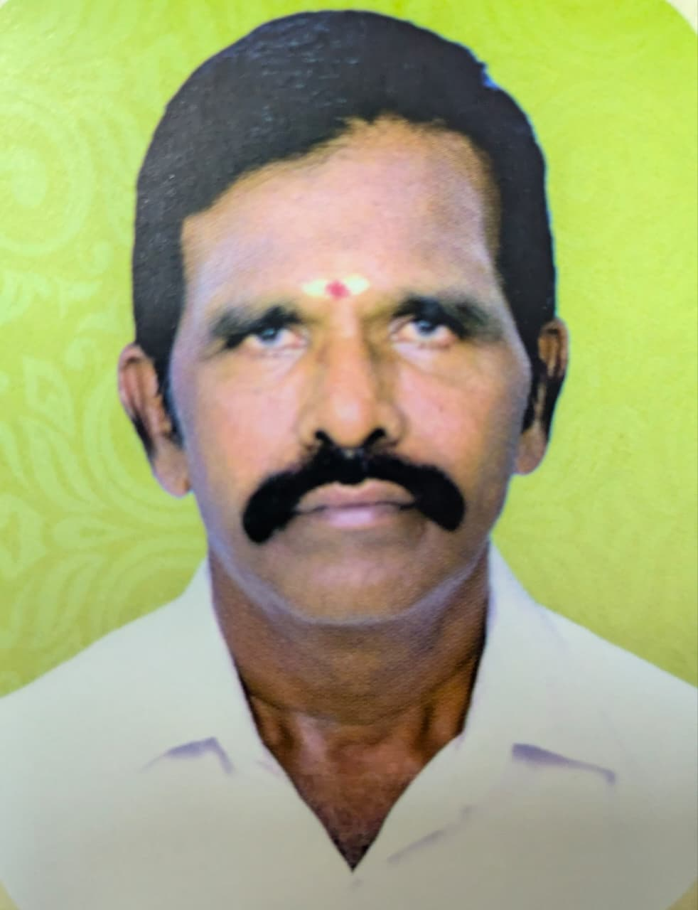

முகப்பு › நிர்வாகம்
திருக்கோவில் நிர்வாகம்
14 (எ) 37 கோயில் வீட்டின் அண்ணன்மார்கள் சார்பாக நிர்வாக சபை தேர்தெடுத்து திருக்கோவிலில் நடைபெறும்.
அண்ணன்மார்களின் ஒத்துழைப்பு மற்றும் நன்கொடை மூலம் பெற்று பூஜைகளும், விழாக்களும், கோவில் பராமரிப்புகளும், ஆண்டு விழாக்கள் நடத்துவதற்காக நிர்வாக சபை அமைக்கப்பட்டது

👑 தலைவர்
P. சதீஷ்குமார்
இராசிபுரம் புதுப்பாளையம்

📝 செயலாளர்
G. சக்திவேல் பூசாரியார்
பவானி

💰 பொருளாளர்
S. ஆனந்த்குமார்
கிளியம்பட்டி
துணைத் தலைவர்கள்

P. சந்திரன்
செம்மாண்டம்பாளையம் மேற்கு

N.P. தேவராஜ் பூசாரியார்
சாணாம்புதூர்
துணைச் செயலாளர்கள்

P. சுரேஷ்குமார்
கோபி – ஏழூர்
V.C. சுப்பிரமணி
பூந்துறை சேமூர்
தணிக்கையாளர்கள்

A. இளங்கோவன்
பி.கே. வேலம்பாளையம் கிழக்கு
A. முருகேசன் பூசாரியார்
சேலம்
V. பன்னீர்செல்வம்
நாமக்கல் ஏழூர்
S. சதாசிவம்
லக்காபுரம் புதூர்
14-பொது கணக்குப்பிள்ளை

C. நல்லதம்பி
கூட்டாத்துப்பட்டி